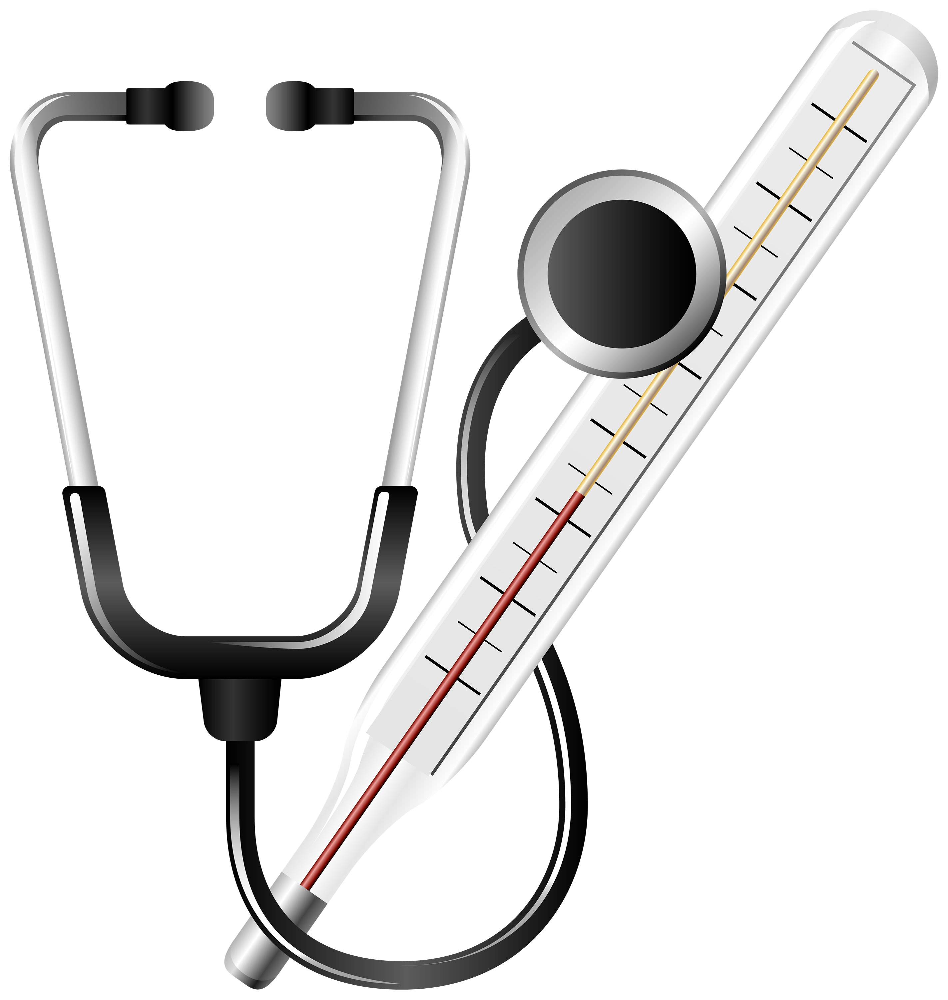

Posted by Giacomo Saccaggi in December, 2025
Posted by Giacomo Saccaggi in March, 2024
Posted by Giacomo Saccaggi in October, 2022
Posted by Giacomo Saccaggi in January, 2021
Posted by Giacomo Saccaggi in March, 2020

Posted by Giacomo Saccaggi in September, 2019
Posted by Giacomo Saccaggi in January, 2019
Posted by Giacomo Saccaggi in July, 2018
Posted by Giacomo Saccaggi in May, 2019